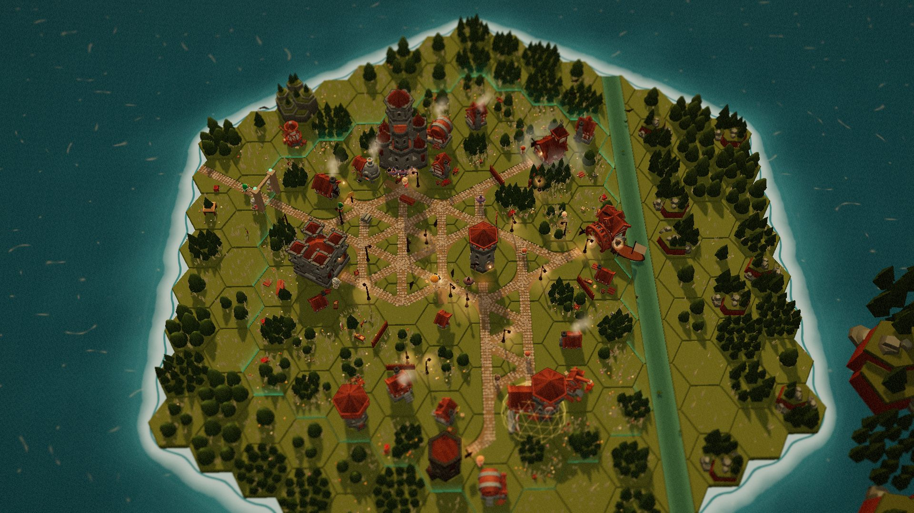

Nearcarta
independent, not affiliated with NEAR Foundation
⚑
Set your agent’s rules
Start here
Jump
Walk
Explore
Hold to freeze agent
Nearcarta
the oath decides, the town remembers
Click a building to step inside
+
−
Street
←
Back to the street
Esc
Your rules
How it works

Nearcarta
Opening the town
independent · not affiliated with NEAR Foundation